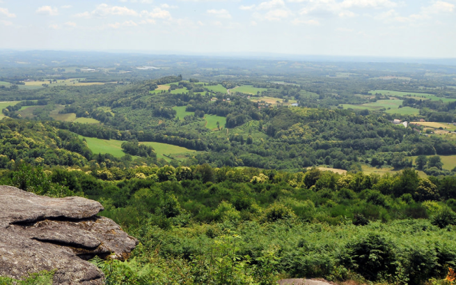

Est-ce dû à ses châteaux, gardiens de la mémoire du temps et de légendes jamais vraiment oubliées ? A sa nature omniprésente qui, entre eaux et forêts, impose son rythme ? Ou peut-être à ses habitants, descendants des premiers troubadours, qui vous accueillent avec le verbe occitant ? Nul n’a réellement percé le mystère. Mais un fait reste certain : venir chez nous, c’est toujours partir à l’aventure…
La Communauté d’Agglomération du Grand Guéret œuvre pour la promotion du territoire depuis une vingtaine d’année. En devenant propriétaire d’hébergements touristiques, en créant le Parc Animalier des Monts de Guéret « Les Loups de Chabrières », et en développant la Station Sports Nature des Monts de Guéret, elle a renforcé l’offre locale et a doté le territoire de produits d’appel touristiques forts. Aujourd’hui, dans sa volonté d’insuffler un nouveau développement à son projet de territoire, elle propose la reprise de ses différents sites d’hébergement par des acteurs privés ou publics prêts à s’engager dans la promotion et le développement du territoire.
Cette reprise du hameau de gîtes de Saint-Victor-en-Marche, du camping de La Chapelle-Taillefert, du camping d’Anzême et du hameau de gîtes de Jouillat est possible par le biais d’une vente ou d’un bail emphytéotique administratif.
Les personnes intéressées devront présenter un projet de reprise avec un engagement fort en termes de rénovation et de développement des équipements existants. Toute proposition sera étudiée.
Que vous habitiez Paris, Lyon ou Amsterdam, qui vous souhaitiez vous mettre au vert durant 15 jours ou un week-end, venir en famille dans les Monts de Guéret est vraiment très facile. De par sa situation géographique centrale, Guéret n’est jamais bien loin de chez vous !
Dans les Monts de Guéret, se déplacer il n’y a rien de plus facile ! Des bus et navettes desservent toute l’agglomération et seront vous faire traverser emmener où vous le souhaitez pour profitez des magnifiques paysages et incroyables activités que vous offre le Grand Guéret !
Dotés d’espaces naturels remarquables, de superbes panoramas, de 150 km de ruisseaux et rivières et 41 hectares de plans d’eau. Les Monts de Guéret offrent un formidable terrain de jeux autour d’activités terrestres, nautiques et aériennes !
L’histoire du Grand Guéret se transmet au travers des livres grâce à la grande diversité d’oeuvres présente dans notre réseau de lecture publique. Les bibliothèques des Monts Du Guéret offrent un formidable terrain de jeux pour les amoureux des livres !